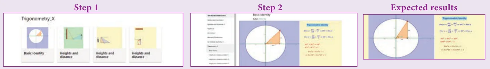
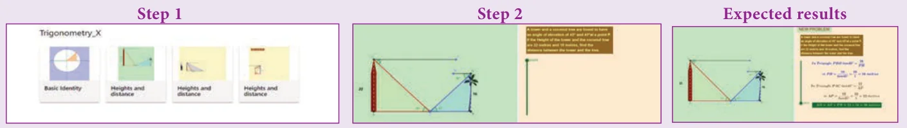

ICT 6.1
Step 1: Open the Browser type the URL Link given below (or) Scan the QR Code. Chapter named “Trigonometry” will open. Select the work sheet “Basic Identity”
Step 2: In the given worksheet you can change the triangle by dragging the point “B”. Check the identity for each angle of the right angled triangle in the unit circle.

ICT 6.2
Step 1: Open the Browser type the URL Link given below (or) Scan the QR Code. Chapter named “Trigonometry” will open. Select the work sheet “Heights and distance problem-1”
Step 2: In the given worksheet you can change the Question by clicking on “New Problem”. Move the slider, to view the steps. Workout the problem yourself and verify the answer.

You can repeat the same steps for other activities
https://www.geogebra.org/m/jfr2zzgy#chapter/356196
or Scan the QR Code.